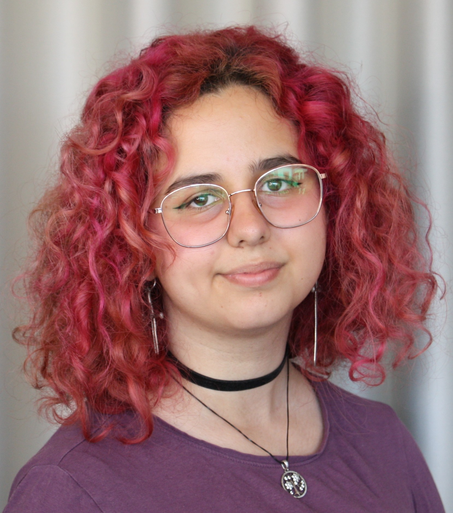

Resume

Katalina Haritova
Software Engineering student with a completed Bachelor’s degree in Business and a strong background in graphic design. I combine technical development skills with a user-centered and strategic mindset, allowing me to build intuitive, visually considered digital solutions. I am highly engaged, curious, and motivated by solving complex problems through clean frontend implementation, collaboration, and continuous learning.
362820@via.dk
Phone
+45 50436075
/in/katalinaharitova
Education / Experience
International Baccalaureate – Hasseris Gymnasium
2019 – 2022
- Critical thinking and research skills
- Global awareness and communication
- Managing workload across complex subjects
Design & Business – UCN
2022 – 2024
- User-centered design
- Combining creativity with business strategy
- Collaboration and project management
- Adobe Suite proficiency
Graphic Design Internship – Graitor
2024
- Branding and mascot design
- Client communication and feedback cycles
Bachelor’s in Software Engineering – VIA
2025 – now
- Software development fundamentals
- Problem-solving and structured thinking
Languages
- Danish
- English
- Bulgarian
Software
Programming
- Java
- JavaFX
- HTML & CSS
- JavaScript
- Python
- SQL
Graphic Design
- Adobe Photoshop
- Adobe Illustrator
- Adobe InDesign
- Adobe XD
Planning & Collaboration
- Git & GitHub
- Figma
- Jira
- Nifty
- Adobe Photoshop
- Adobe Illustrator
- Adobe InDesign
- Adobe XD